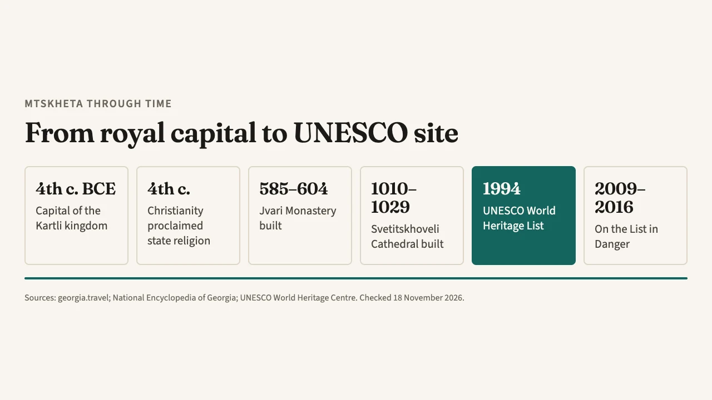
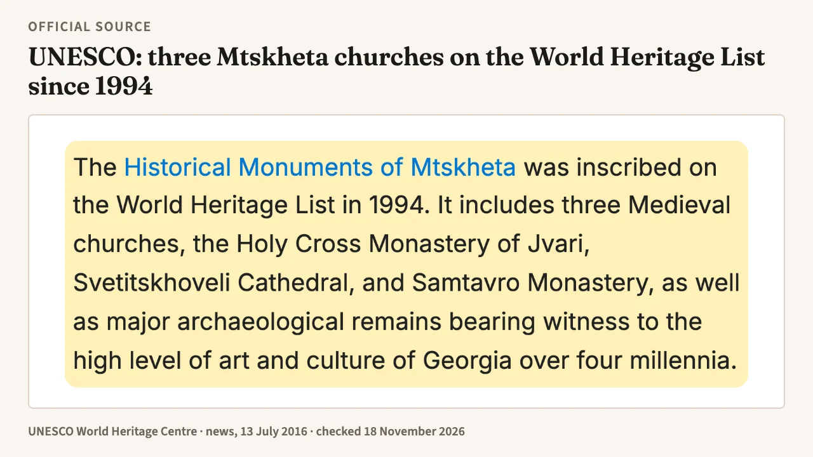
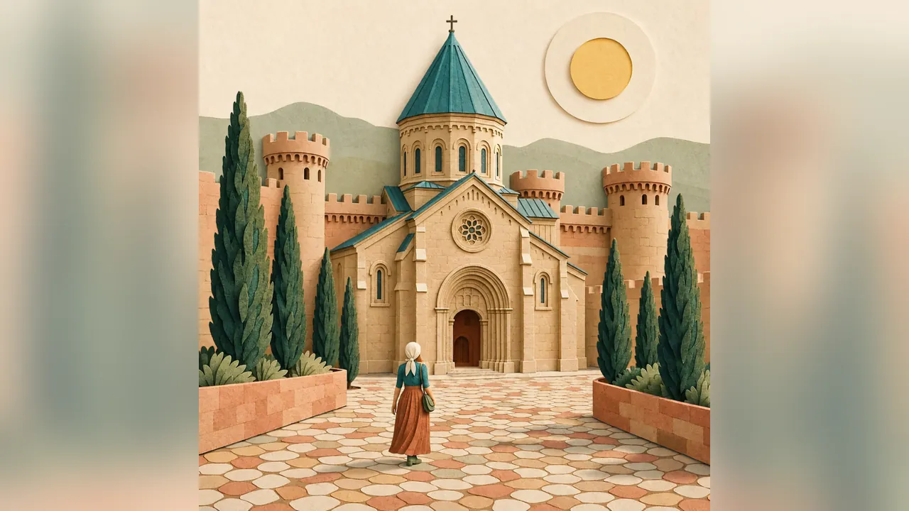

- From Tbilisi by road
- about 20 minutes
- Jvari built
- 585–604
- Svetitskhoveli
- 1010–1029
- UNESCO list
- 1994
This page is about Georgia the country, not the US state, and is part of the Georgia Travel Guide. Checked on 18 November 2026.
Why Mtskheta matters: the old capital
It was a royal capital long before Tbilisi, and it stayed a religious centre after the court moved away. Here is the story in four short steps.
The legend. Georgia's national tourism administration tells it on georgia.travel: "According to legend", the town "was founded in the 1st millennium BCE by the ethnarch Mtskhetos". Treat it as a legend, not as history.
The capital. King Parnavaz made it the capital in the 4th century BC. The town's municipality says that "For eight hundred years until the end of the 5th century" it "was the political center of the kingdom of Kartli". The tourism administration adds that Kartli is "otherwise known as Iberia".
The faith. Christianity was proclaimed the state religion of Georgia from here in the 4th century, says georgia.travel. The municipality credits St. Nino with preaching it in the town. You will meet her name again at both monasteries below.
After the court left. Once the capital moved to Tbilisi, the municipality says, the town "became a cultural and religious center". Today so much history sits in a small area that "it is sometimes called the city-museum" (georgia.travel).
The story at a glance:
- 4th century BC: King Parnavaz makes it the capital of Kartli.
- 4th century: Christianity is proclaimed the state religion.
- 585–604: the monastery on the cliff is built.
- 1010–1029: the cathedral is built.
- 1994: the three churches join the World Heritage List.
- 2009–2016: the site is on the List of World Heritage in Danger.

Historical Monuments of Mtskheta
The three great churches of the town form a single World Heritage site. A UNESCO news release sums it up: the site "was inscribed on the World Heritage List in 1994. It includes three Medieval churches, the Holy Cross Monastery of Jvari, Svetitskhoveli Cathedral, and Samtavro Monastery, as well as major archaeological remains".
On the danger list, and off it. For seven years the site was on the List of World Heritage in Danger. UNESCO says it was put there in 2009 "due, notably, to the deterioration of its stone fabric and fresco paintings caused by work carried out to its edifices", and "kept on the List in Danger due to uncontrolled urban sprawl". In July 2016 the World Heritage Committee decided to remove it from that list.
What it means for your visit. These are protected buildings, and at least one is a living monastery (more on that below). Enjoy the old stone and wall paintings with your eyes, not your hands, and keep your voice down inside.

Jvari Monastery
The monastery sits on a rocky cliff to the east of Mtskheta and looks down on the town, according to georgia.travel.
The cross of St. Nino. The site is the place "where Saint Nino set up her wooden cross in the 4th century", the tourism administration says. UNESCO calls it the Holy Cross Monastery.
The church. Stephanoz I built the cross-domed church there "between 585 and 604" (georgia.travel). Its plan is a tetraconch, with four rounded apses around the centre. In plain words, the four rounded apses give the church a compact, clover-like shape when seen from above.
Look for the old letters. The tourism administration also points to the Asomtavruli script here, "some of the earliest examples of Georgian writing".
A living monastery. Monks have lived here since 1996, according to the same page. Dress modestly, keep quiet and ask before you photograph anyone.
Getting up there. It stands apart from the town, on its own cliff, so plan it as a separate leg of the day; see getting there.

Svetitskhoveli Cathedral
The cathedral was built in the 11th century, between 1010 and 1029. The National Encyclopedia of Georgia puts it this way: "The construction of the Cathedral began in 1010 under Melchizedek, the Catholicos of Kartli, and was completed in 1029".
Which dates to trust. The tourism site and the municipality give 1010–1129 for the same building. We use the encyclopedia's dates.
A name from the past. The encyclopedia says Arsukisdze was probably the architect. Look for his inscription on the eastern façade, below the central arch: "The Hand of Arsukisdze, servant of God, may forgiveness be his."
The walk through the market. On the way to the cathedral you pass what georgia.travel calls "a bustling marketplace full of local artisans, wine vendors…". Browse it on the way back, once you have seen the churches.

Samtavro Monastery
It is the third church in the UNESCO listing, where it appears as Samtavro Monastery. The tourism site names two parts of it: "the 4th century Samtavro St. Nino Church" and "the Samtavro Church Complex (1030)". Sources disagree on how old the buildings are, so we keep to these two quotes.
Its link to St. Nino makes it a natural stop after the monastery where her cross once stood.
Visiting churches
Dress modestly and be quiet. We found no official dress code from the church or the tourism administration, so the first two points are what visitors report, and the rest are our tips.
- Visitors report that shoulders and knees should be covered.
- Visitors report that women are expected to cover their hair with a headscarf.
- Carry a light scarf and long trousers or a long skirt in your bag; they also protect you from the sun.
- If a service is going on, stand at the back, keep quiet and do not walk in front of people who are praying.
- Ask before you take photos inside, and always before you photograph people.
- Turn your phone to silent.
Rules can differ from church to church. If there is a sign at the door, or someone asks you to cover up, do as they ask.
Tbilisi to Mtskheta: getting there
It is about 20 minutes by road. That is the travel time georgia.travel gives from Tbilisi, which makes Mtskheta an easy half-day or day trip. Traffic can make it longer.
How to travel. You can go by taxi or hired car, on an organised tour, or by public transport. We found no official timetables or fares for any of them, so we do not give any. Ask locally on the day, for example at your hotel, how to get there and back, and agree the price before you set off.
Getting up to the monastery. It is not in the town itself but on a rocky cliff to the east (georgia.travel). We found no official information on how to reach it or whether you can walk up, so check transport on the day, ideally before you leave Tbilisi. If you take a taxi, say up front that you want to stop at the monastery as well as the town.
Coming back. Plan your return before you set off, especially if you travel by public transport or plan to stay until evening. Save your hotel's address on your phone so you can show it to a driver.
Timing. In summer, plan the outdoor parts of the day for the morning or late afternoon. The NHS advises people to "avoid the sun between 11am and 3pm"; see heat, health and help.
Things to do in Mtskheta and nearby
Beyond the three big churches, there is plenty to see. According to georgia.travel, the surrounding municipality is home to 300 cultural monuments, more than 30,000 artifacts and more than 50 archaeological areas. Here are a few the tourism administration points to.
Zedazeni Monastery. The National Encyclopedia of Georgia describes "the three-nave basilica of John the Baptist, built… at the end of the 8th century" at this monastery.
Shio-Mgvime and Tsilkani. The tourism administration mentions them, along with Zedazeni, in connection with the Holy Assyrian Fathers "who came to Georgia in the 6th century". Ask locally how far each one is and how to get there.
Dzalisi and Mukhrani. The same georgia.travel page mentions "the ruined royal city of Dzalisi (2nd-century BCE - 8th century)" and Mukhrani, "a vital commercial and trade hub in the 3rd and 2nd centuries BCE". Ask locally how to get there.
A slow walk in town. Do not rush the town itself: the market on the way to the cathedral, Samtavro, and the view up to the monastery on its cliff. Wear comfortable shoes and take breaks in the shade.
A simple plan. Go up to the cliff-top monastery first, in the cooler morning. Then come down to the cathedral and Samtavro, have lunch in town and browse the market before heading back to Tbilisi. This is our suggestion, not an official route.
Heat, health and help
On a summer day trip, the heat is the thing to plan for. Below is the advice of the UK's National Health Service (NHS), with one change: in Georgia the emergency number is 112, not 999. The checklist is ours.
Before you go. The NHS suggests you "drink more cold drinks", "wear light-coloured, loose clothing" and "avoid the sun between 11am and 3pm". Pack a hat and a bottle of water, plus the scarf for the churches.
A day-trip checklist.
- Water, more than you think you need.
- A hat and light, loose clothing.
- A scarf, and clothes that cover shoulders and knees, for the churches.
- Comfortable shoes with grip for the cliff top and the old streets.
- A charged phone with 112 and your hotel's address saved.
- Your travel insurance details, in case you need a doctor.
Signs of heat exhaustion. According to the NHS, the signs include tiredness, dizziness, a headache, nausea, excessive sweating, cramps, a high temperature and being very thirsty.
Four steps. If someone has these signs, the NHS says "they need to be cooled down and given fluids". Its four steps:
- Move them to a cool place.
- Remove all unnecessary clothing.
- Give them plenty of water to drink.
- Cool their skin.
They should "start to cool down and feel better within 30 minutes", the NHS says.
Signs of heatstroke: dial 112 at once. The NHS lists "a very high temperature, hot skin without sweating, fast breathing and a fast heartbeat, confusion and restlessness, seizure (fit), loss of consciousness". It is clear: "Heatstroke is a medical emergency." Do not wait 30 minutes: dial 112 straight away. While you wait, the NHS advises you to "wrap the person in a cool, wet sheet, or fan them or sponge them down with cold water".
Heat exhaustion that does not improve. If someone with heat exhaustion is not feeling better within 30 minutes, dial 112 too. Here is how to call an ambulance on 112 and what to say.

Medical care nearby. UK government travel advice is direct: "Outside Tbilisi, medical facilities are limited." The good news is that Tbilisi is only about 20 minutes away by road. For anything serious, call 112; for a problem that can wait, see a doctor back in the city.
If you still feel unwell the next day, see a doctor. You can find a family doctor in Tbilisi on 100doc.ge and contact the clinic directly.
Insurance. Georgia requires visitors to have travel insurance to enter: see the 2026 entry insurance rule.
Frequently asked questions
How far is Mtskheta from Tbilisi?
Is Mtskheta a UNESCO site?
When was Jvari built?
How old is Svetitskhoveli?
What should I wear in Georgian churches?
Visitors report covered shoulders and knees, and a headscarf for women. We found no official rule, so follow any sign at the door or request from the people there.
What are the signs of heat exhaustion?
The NHS lists tiredness, dizziness, a headache, nausea, excessive sweating, cramps, a high temperature and being very thirsty. Move the person somewhere cool and give them water. Confusion, hot skin that is not sweating, a seizure or fainting may be heatstroke: dial 112 at once. Otherwise, dial 112 if they do not feel better within 30 minutes.
Can I walk up to the monastery on the cliff?
We found no official information on a walking route or on transport to the top. Check on the day, at your hotel or with a driver, before you set off.
How long do you need in Mtskheta?
Our suggestion is a half or full day. A half day is enough for the three main churches; a full day leaves time for the market, lunch and a slower pace in the heat. This is our advice, not an official figure.
Sources
- UNESCO World Heritage Centre: news release of July 2016 (inscription in 1994, the three churches, the danger list) ↑
- Georgian National Tourism Administration: Mtskheta (travel time, history, market, nearby sites) ↑
- Georgian National Tourism Administration: Jvari Monastery ↑
- Mtskheta Municipality: history of the town ↑
- National Encyclopedia of Georgia: Arsukisdze (cathedral dates) ↑
- National Encyclopedia of Georgia: Zedazeni Monastery ↑
- NHS: heat exhaustion and heatstroke ↑
- GOV.UK travel advice for Georgia: health ↑
This guide is general information, not medical advice: the doctor decides on your treatment.